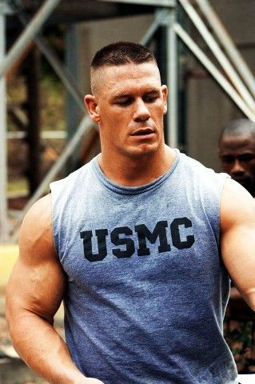

Cortes Militares |
|||
 |
|||
Los cortes militares tienen sus raíces en las tradiciones y prácticas de los ejércitos y fuerzas armadas de diferentes países. A lo largo de la historia, los cortes de cabello militares han tenido varios propósitos y han evolucionado con el tiempo.
-Funcionalidad y uniformidad: Desde tiempos antiguos, los ejércitos han buscado formas de distinguirse y mostrar una apariencia uniforme entre sus filas. Los cortes de cabello cortos y uniformes ayudaban a lograr esta uniformidad visual y también tenían -ventajas prácticas en el campo de batalla. El cabello corto evitaba que el pelo se enredara en el equipo o causara interferencias en el uso de cascos y otros accesorios.
-Higiene y prevención de enfermedades: Durante épocas en las que las condiciones sanitarias no eran las mejores, mantener el cabello corto ayudaba a prevenir la propagación de piojos, pulgas y otros parásitos, así como la acumulación de suciedad y malos olores. Los cortes militares también facilitaban la limpieza y el mantenimiento adecuado de la higiene personal en entornos militares.
-Identificación y disciplina: Los cortes de cabello militares se convirtieron en una forma de identificar a los soldados como miembros del ejército y de diferenciarlos de la población civil. Además, los cortes de cabello cortos simbolizaban la disciplina y la obediencia a la autoridad. Estas características eran altamente valoradas en el ambiente militar, y el aspecto físico, incluido el cabello, era parte de la cultura de la disciplina militar.
 <
<